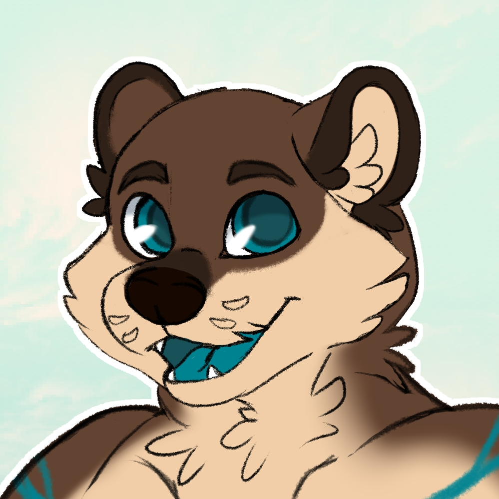

🦘 Anthrorigen Otter 🦦
Hola, soy Erizigh pero puedes llamarme Eri (Es mi nombre real). Soy de España, en concreto, de Gran Canaria, Islas Canarias.
Soy una persona tranquila pero activa (No me gusta el aburrimiento) con ganas de aprender y hacer cosas, siempre que las condiciones ayuden a ello.
Me gusta socializar, compartir mis gustos y viceversa, siempre y cuando haya algo en común/interés en ello. También soy un poco aventurero por mis hobbies y por aprender idiomas nuevos, aunque solamente sepa Español y un poco de Inglés. Me gustaría mejorar mi idioma extranjero.
Como ser humano que soy, no todo es bueno; también tengo muchos defectos y ando mejorando siempre para eliminarlos o, al menos, minimizarlos; pero no le doy protagonismo. Siempre positivo.
Si te apetece saludar, hablar o compartir algo, estaré en:
Telegram